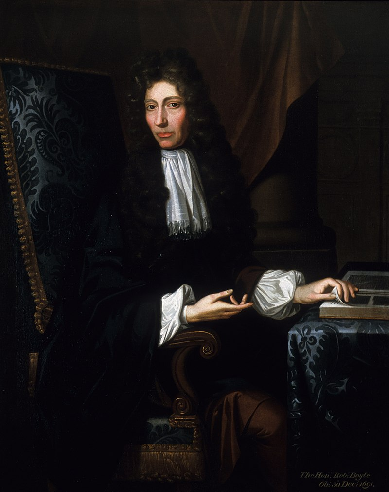

17th Century Scientists
17th Century to 18th Century.
Isaac Newton
| Born: | 1643 |
| Died: | 1727 |
| Known for: | Newton formulated the laws of motion |
But didn't define motion so...
I do not define time, space, place, and motion, as being well known to all.
— Newton
Philosophiae Naturalis Principia Mathematica
Robert Hooke
| Born: | 1635 |
| Died: | 1703 |
| Known for: | Hooke's law |
Hooke's law
In physics, Hooke's law is an empirical law which states that the force (F) needed to extend or compress a spring by some distance (x) scales linearly with respect to that distance and x is small compared to the total possible deformation of the spring. The law is named after 17th-century British physicist Robert Hooke. He first stated the law in 1676 as a Latin anagram. He published the solution of his anagram in 1678 as: ut tensio, sic vis ("as the extension, so the force" or "the extension is proportional to the force"). Hooke states in the 1678 work that he was aware of the law since 1660.
Robert Boyle
| Born: | 1627 |
| Died: | 1691 |
| Known for: | Boyle's law |
Boyle's law
Boyle's law, also referred to as the Boyle-Mariotte law or Mariotte's law (especially in France), is an empirical gas law that describes the relationship between pressure and volume of a confined gas. Boyle's law has been stated as: The absolute pressure exerted by a given mass of an ideal gas is inversely proportional to the volume it occupies if the temperature and amount of gas remain unchanged within a closed system.
Christiaan Huygens
| Born: | 1629 |
| Died: | 1695 |
| Known for: | Pendulum clock |
Pendulum clock
The pendulum clock was invented on 25 December 1656 by Dutch scientist and inventor Christiaan Huygens, and patented the following year. He described it in his manuscript Horologium published in 1658. Huygens contracted the construction of his clock designs to clockmaker Salomon Coster, who actually built the clock.[4] Huygens was inspired by investigations of pendulums by Galileo Galilei beginning around 1602.